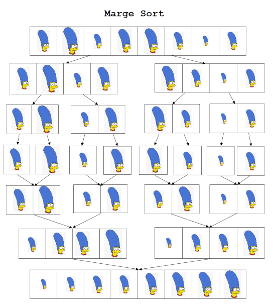

Docentes de práctica: Tomás Assenza, Exequiel Benavidez, Facundo Sanchez, Nicolás Huber
UTN - Facultad Regional Santa Fe
SELECCIÓN, INSERCIÓN, BURBUJA Y MERGESORT
Busca el elemento mínimo de la lista y lo intercambia con el primero. Luego busca el siguiente mínimo en el resto y lo intercambia con el segundo, y así sucesivamente.
Características:
void seleccion(int vec[], const int tl) {
int i, j, min;
for (i = 0; i < tl; i++) {
min = i;
for (j = i + 1; j < tl; j++)
if (vec[j] < vec[min]) min = j;
intercambio(vec[i], vec[min]);
}
}
Ordena insertando cada elemento en su posición correcta respecto a los elementos que ya han sido ordenados previamente (similar a cómo se ordenan cartas en la mano).
Características:
void insercion(int vec[], const int tl) {
int i, j;
for (i = 1; i < tl; i++) {
j = i;
while ((j > 0) && (vec[j] < vec[j - 1])) {
intercambio(vec[j], vec[j - 1]);
j = j - 1;
}
}
}
Compara elementos adyacentes y los intercambia si están en el orden incorrecto. El elemento más grande "flota" hacia el final en cada pasada.
Características:
void burbuja(int vec[], const int tl) {
int pasada, k;
for (pasada = 1; pasada < tl; pasada++) {
for (k = 0; k < tl - 1; k++)
if (vec[k] > vec[k + 1])
intercambio(vec[k], vec[k + 1]);
}
}

Divide recursivamente el arreglo en mitades iguales hasta tener arreglos de tamaño 1. Luego, mezcla ordenadamente las mitades adyacentes.
Características:
void mergesort(int v[], int inicio, int final) {
if (final - inicio == 0) return;
else {
mergesort(v, inicio, (inicio + final) / 2);
mergesort(v, (inicio + final) / 2 + 1, final);
merge(v, inicio, (inicio + final) / 2, (inicio + final) / 2 + 1, final);
}
}
void merge(int v[], int inicio1, int final1, int inicio2, int final2) {
int i = inicio1, j = inicio2, k = 0;
int c[100]; // Memoria temporal
while (i <= final1 && j <= final2) {
if (v[i] < v[j]) c[k++] = v[i++];
else c[k++] = v[j++];
}
while (i <= final1) c[k++] = v[i++];
while (j <= final2) c[k++] = v[j++];
for (k = 0; k < final2 - inicio1 + 1; k++)
v[inicio1 + k] = c[k];
}
PRÁCTICA Y MÉTODOS COMBINADOS
Diseñar la función elimOrdenar que recibe un arreglo desordenado A de 500 números enteros, su tamaño lógico TLA y un entero X. La función debe:
Eliminar todos los valores del vector A que sean múltiplos de X.
Dejar el vector ordenado ascendentemente.
Retornar cuántos elementos fueron eliminados del vector A.
La función Uno() recibe dos arreglos desordenados (A y B, con TB ≤ TA), sus tamaños lógicos (TA y TB) y un booleano C. La función debe:
¿Qué debe retornar?
V y su tamaño lógico TV.V debe quedar ordenado ascendentemente si C == true (descendentemente en caso contrario).CADENAS DE CARACTERES EN C++
Diseñar una función que reciba un string y compruebe si es un identificador de usuario válido. Los identificadores deben:
registrar("jperez12") → true
registrar("1jperez123") → false
bool registrar(string identificador) {
unsigned i = 1;
bool hayOtroDigito = false;
while (i < identificador.length() && !hayOtroDigito) {
if (!isalnum(identificador[i])) hayOtroDigito = true;
i++;
}
return !hayOtroDigito &&
identificador.length() == 8 &&
isalpha(identificador[0]);
}
Modificá el código o ingresá valores en STDIN para probar el registro.
Realizar un programa que pida una frase e indique si es o no palíndroma (se lee igual en ambos sentidos, ignorando espacios en blanco).
Usamos dos índices (izquierdo y derecho) que avanzan hacia el centro del string. Si en algún momento encuentran caracteres distintos, se descarta.
"dabale arroz a la zorra el abad" → true
"dabale arros a la zorra el abad" → false
bool esPalindromo(string cadenaAAnalizar) {
int indiceIzquierdo = 0, indiceDerecho = cadenaAAnalizar.length() - 1;
if (cadenaAAnalizar.length() > 0) {
bool cumpleCondicionPalindroma = true;
while (indiceIzquierdo < indiceDerecho && cumpleCondicionPalindroma) {
while (cadenaAAnalizar[indiceIzquierdo] == ' ') indiceIzquierdo++;
while (cadenaAAnalizar[indiceDerecho] == ' ') indiceDerecho--;
if (cadenaAAnalizar[indiceIzquierdo] != cadenaAAnalizar[indiceDerecho])
cumpleCondicionPalindroma = false;
indiceIzquierdo++;
indiceDerecho--;
}
}
return cadenaAAnalizar.length() == 0 || indiceIzquierdo >= indiceDerecho;
}
Proba frases en STDIN (ej. dabale arroz a la zorra el abad).
Diseñar una función que permita generar direcciones de correo electrónico de la facultad a partir del nombre y apellido de un usuario en un mismo string (ej: "Perez Juan").
@frsf.utn.edu.arEntrada: "Assenza Tomas"
Email: "tassenza@frsf.utn.edu.ar"
string armaMail(string nombreApellido) {
string mail = "";
if (nombreApellido.length() > 0) {
// Inicial del nombre + Inicial del apellido + resto apellido
mail += tolower(nombreApellido[nombreApellido.rfind(' ') + 1]);
mail += tolower(nombreApellido[0]);
mail += nombreApellido.substr(1, nombreApellido.find(' ') - 1);
mail += "@frsf.utn.edu.ar";
}
return mail;
}
Proba ingresando tu nombre en STDIN.
Una palabra α es un anagrama de β si es posible obtener α cambiando el orden de las letras de β. Diseñar una función que compruebe si dos palabras son anagramas (case-insensitive).
Usamos arreglos de frecuencia (tamaño 256) para contar cuántas veces aparece cada carácter en ambos strings, y luego comparamos las frecuencias en el rango 'a'-'z'.
sonAnagramas("MORA", "RAMO") → true
sonAnagramas("RAMO", "RoMA") → true
sonAnagramas("RAMO", "ROMO") → false
bool sonAnagramas(string primerString, string segundoString) {
int frecuenciasPrimerString[256] {}, frecuenciasSegundoString[256] {};
bool cumplenCondicionAnagrama = true;
for (unsigned i = 0; i < primerString.length(); i++)
frecuenciasPrimerString[tolower(primerString[i])]++;
for (unsigned i = 0; i < segundoString.length(); i++)
frecuenciasSegundoString[tolower(segundoString[i])]++;
int i = 'a';
while (i <= 'z' && cumplenCondicionAnagrama) {
if (frecuenciasPrimerString[i] != frecuenciasSegundoString[i])
cumplenCondicionAnagrama = false;
i++;
}
return cumplenCondicionAnagrama;
}
Proba ingresando dos palabras en STDIN.
Desarrollar una función recursiva llamada invString_recursivo que reciba un string y su tamaño lógico, y devuelva la cadena invertida.
"".Entrada: "lee un texto", 12
Retorno: "otxet nu eel"
string invString_recursivo(string entrada, int tamanioEntrada) {
if (tamanioEntrada == 0) return "";
return entrada[tamanioEntrada - 1] +
invString_recursivo(entrada, tamanioEntrada - 1);
}
Proba ingresando un texto en STDIN.
Comisión A
UTN SANTA FE - INGENIERÍA EN SISTEMAS